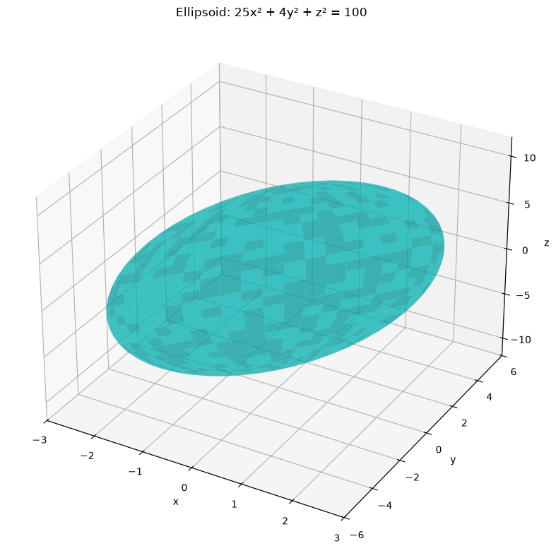
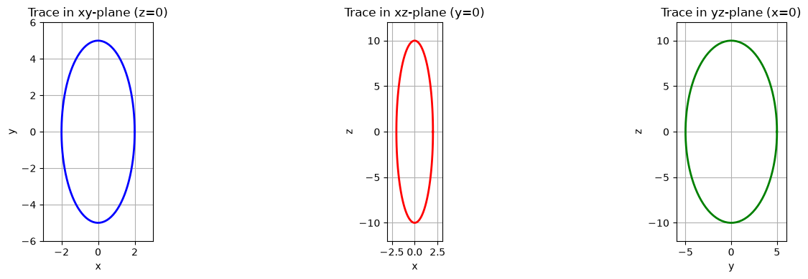
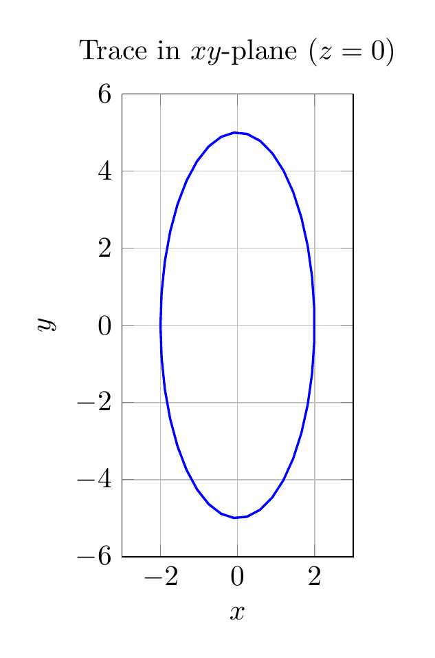
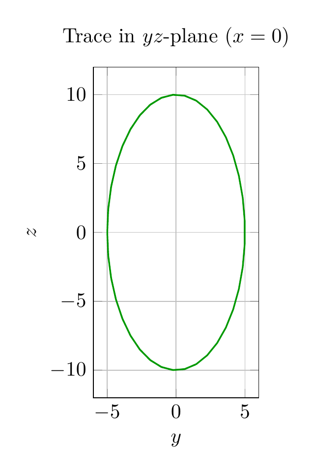

Path: mcma-Qwen3.6-27B/calculus-12.6.14/chat_20260827_000327_900514_utc_0800
Problem
Please solve the math problem in the image.

20260827_000327_900514_utc_0800_0.png 
20260827_000327_900514_utc_0800_0.png
End of problem
Answer
## Solution: Identify the Surface $25x^2 + 4y^2 + z^2 = 100$
**Standard Form:**
$$\frac{x^2}{2^2} + \frac{y^2}{5^2} + \frac{z^2}{10^2} = 1$$
**Surface Type:** Ellipsoid centered at the origin
**Semi-axes:** $a = 2$ (along $x$), $b = 5$ (along $y$), $c = 10$ (along $z$)
**Traces:**
- $xy$-plane ($z=0$): Ellipse $\frac{x^2}{4} + \frac{y^2}{25} = 1$
- $xz$-plane ($y=0$): Ellipse $\frac{x^2}{4} + \frac{z^2}{100} = 1$
- $yz$-plane ($x=0$): Ellipse $\frac{y^2}{25} + \frac{z^2}{100} = 1$
**Intercepts:** $(\pm 2, 0, 0)$, $(0, \pm 5, 0)$, $(0, 0, \pm 10)$
$\boxed{\text{Ellipsoid}}$
---




\documentclass[border=10pt]{standalone}
\usepackage{pgfplots}
\pgfplotsset{compat=1.18}
\begin{document}
\begin{tikzpicture}
\begin{axis}[
xlabel={$x$},
ylabel={$y$},
xmin=-3, xmax=3,
ymin=-6, ymax=6,
axis equal image,
grid=major,
title={Trace in $xy$-plane ($z=0$)}
]
\addplot[blue, thick, samples=60] ({2*cos(deg(x))}, {5*sin(deg(x))});
\end{axis}
\end{tikzpicture}
\end{document}

\documentclass[border=10pt]{standalone}
\usepackage{pgfplots}
\pgfplotsset{compat=1.18}
\begin{document}
\begin{tikzpicture}
\begin{axis}[
xlabel={$y$},
ylabel={$z$},
xmin=-6, xmax=6,
ymin=-12, ymax=12,
axis equal image,
grid=major,
title={Trace in $yz$-plane ($x=0$)}
]
\addplot[green!60!black, thick, samples=60] ({5*cos(deg(x))}, {10*sin(deg(x))});
\end{axis}
\end{tikzpicture}
\end{document}

End of answer